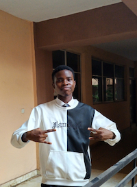

Richard Edigin | WDD 130
Hello! My name Richard Edigin and I am from Benin City, Nigeria. I am a passionate and driven individual with a deep interest in technology, finance, and entrepreneurship. I am currently an undergraduate studying software development through the BYU pathway program. My goal is to specialize in artificial intelligence and build innovative solutions that make a difference in various industries, from fintech to agriculture. On a more personal level, i have a family that means the world to me. Family had always been a strong pillar in my life, and I cherish the moments spent with them. I also have a loyal and energetic German shepherd mix with beautiful brown fur. He is not just a pet but a true companion, always keeping me on my toes with his playful nature. In my free time, i enjoy watching anime and movies with intricate story telling, especially those with unexpected plot twists. I also take time to learn new languages.